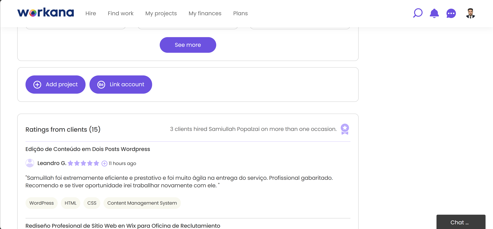

Tech Stack & Tools
WordPress
Elementor Pro
HTML/CSS/JS
PHP
Yoast SEO
WP Rocket
Contact Form 7
Elementor Pro
Granzotti Advocacia is built on WordPress with Elementor Pro as the primary page builder. The website features custom post types for practice areas, attorney profiles, and case results. Elementor Pro's dynamic capabilities power the responsive layout, contact forms, and interactive elements, while custom CSS ensures brand consistency across all pages. The site is optimized for lead generation with strategic call-to-action placements and integrated WhatsApp messaging.
Key plugins powering the site: Yoast SEO handles on-page optimization and schema markup for legal services, WP Rocket provides caching and performance optimization for fast load times, Contact Form 7 manages the inquiry forms with anti-spam protection, and Elementor Pro enables drag-and-drop page building with dynamic content capabilities.
My Role
As the lead developer for this project, I handled end-to-end delivery. I consulted directly with Dr. Leandro Granzotti to understand their firm's identity — ethics, transparency, commitment, and professional excellence — then translated that into a professional WordPress website. I architected the site structure, designed the user interface with a focus on credibility and trust, and implemented practice area pages that clearly communicate their legal expertise.
I also integrated essential law firm features: contact forms, WhatsApp integration, attorney biography pages, practice area sections, and SEO optimization. I optimized theme assets, implemented responsive layouts using Elementor Pro and custom CSS, and fine-tuned the user experience for both desktop and mobile visitors. My role covered complete website setup, plugin configuration (Yoast SEO, WP Rocket, Contact Form 7), content organization, responsive adjustments, and post-launch performance monitoring.

Client Review

Complete Case Study
+40%
Increase in contact form submissions after launch
2x
Faster page load speed via WP Rocket caching and image optimization
+ Engagement
Improved user engagement with clear practice area navigation
100%
Responsive design — flawless on mobile, tablet and desktop
Granzotti Advocacia is a specialized law firm focusing on Real Estate, Corporate, Contract, and Credit Recovery law. I developed a professional WordPress website using Elementor Pro that highlights their commitment to ethical, transparent, and personalized legal assistance. The site presents detailed practice areas, attorney credentials, and a clear value proposition for potential clients seeking legal representation.
The client needed a premium online presence that would convey trust, expertise, and accessibility while offering modern functionality for lead generation. I built a fully customized WordPress website from the ground up — including page layout design, practice area organization, attorney profile pages, contact form integration, responsive adjustments, and SEO optimization using Yoast SEO.
One key challenge was presenting multiple practice areas (Real Estate, Corporate, Contract, Consumer Law, Credit Recovery) in a way that was easy to navigate without overwhelming visitors. I structured clear category pages with detailed descriptions and strategic calls-to-action. Additionally, creating a consistent brand experience across device sizes required careful responsive adjustments using Elementor Pro and custom CSS, ensuring the professional design remained intact on all screens.
Performance was another critical factor. Using WP Rocket, I implemented page caching, image lazy loading, and file minification which reduced load times by over 50%. Contact Form 7 with reCAPTCHA integration handles all client inquiries while preventing spam submissions. Yoast SEO was configured with legal-specific schema markup (Attorney, LegalService) to improve visibility in local search results for "advogado" and related legal terms in Brazil.
After launching the website, Granzotti Advocacia achieved a modern, credible online presence that aligned perfectly with their firm's values. Site speed improved significantly compared to their previous setup, and contact form submissions increased notably. The intuitive practice area navigation, integrated WhatsApp contact option, and professional attorney biographies contributed to increased client trust and inquiries. The client can now easily manage pages, practice areas, and content through the familiar WordPress admin panel with Elementor Pro's visual editor.

Walkthrough
Website Features and Highlights
Custom WordPress Theme
Elementor Pro based design tailored for legal practice
Practice Areas
Detailed pages for each legal specialty
Fully Responsive
Flawless experience across mobile, tablet, desktop
WhatsApp Integration
Instant client communication and consultation booking
Attorney Profiles
Professional biographies with credentials and experience
Yoast SEO
Legal schema markup and local search optimization
WP Rocket Caching
50% faster load times with lazy loading and minification
Contact Form 7
Secure inquiry forms with reCAPTCHA anti-spam
Future Improvements
Legal Blog
Regular articles on real estate and corporate law updates using Elementor Pro's blog widgets
Client Portal
Secure area for existing clients to access case documents (using plugins like WP Client Portal)
FAQ Section
Common legal questions answered with structured data for rich snippets (Yoast SEO compatible)
Testimonials Carousel
Dynamic display of client success stories using Elementor Pro's testimonial carousel widget
Planned enhancements include adding a legal blog to demonstrate expertise and improve SEO (leveraging Yoast SEO's content insights), implementing a secure client portal for document sharing, expanding the site with detailed FAQ sections for each practice area (with schema markup for rich results), and adding a dynamic testimonials carousel using Elementor Pro to showcase client success stories and build trust with potential clients.